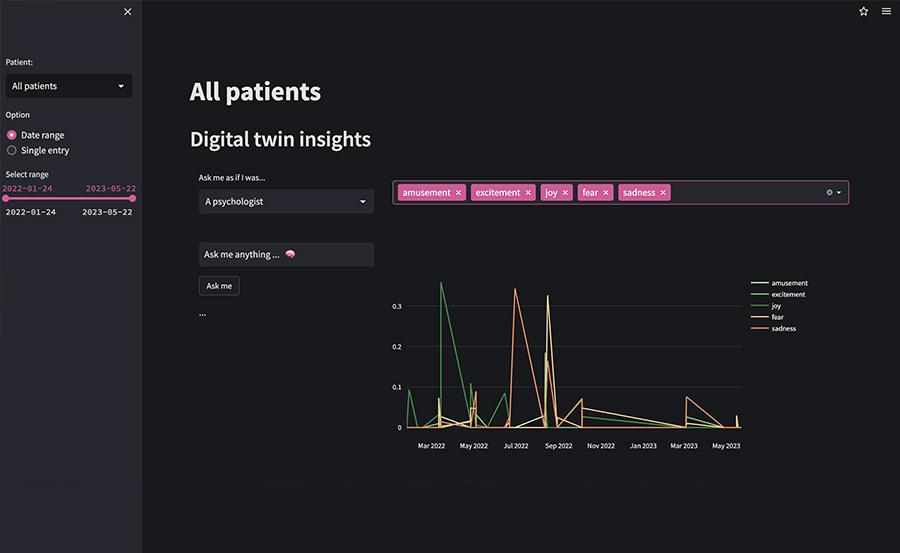

Remote Patient Monitoring.
A special use case for interactive dashboards.

As a freelance Data Scientist, I had the incredible opportunity to work closely with Mindbank AI, a visionary company at the forefront of revolutionizing mental and health care. I played a pivotal role in building their groundbreaking Remote Patient Monitoring tool. This innovative application empowers users, mental health professionals, and even human resources departments to effortlessly monitor the well-being of individuals, whether they are patients or team members.
Key features
A key highlight of this web application is its seamless integration with remote databases,
allowing it to fetch and display data through a range of interactive visualizations.
These dynamic visualizations provide users with valuable insights, enabling them to gain
a comprehensive understanding and effectively analyze the data. By leveraging my expertise
in data science, I heavily contributed to the development of Mindbank AI's Remote Patient
Monitoring, a solution that revolutionizes health monitoring and management in a
user-friendly and intuitive manner.
Do you want more information? Don't hesitate to contact me.